'Flight Simulator 2020', análisis: la experiencia con el simulador de vuelo más realista contada por alguien que no es piloto
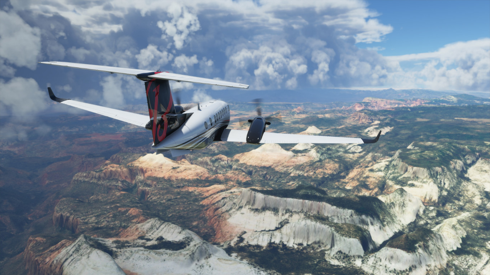Analizar videojuegos no es sencillo y mucho menos cuando hablamos de 'Flight Simulator 2020', el nuevo título de Microsoft. En Xataka ya tuvimos ocasión de probarlo hace algunas semanas, cuando todavía estaba en desarrollo, y ahora hemos podido jugar a la versión final, estable y por todos accesible desde Steam, Microsoft Store o Game Pass, así que he aquí nuestro análisis. Pero juegos especiales merecen análisis especiales y eso es, precisamente, lo que vamos a hacer.
La persona más indicada para analizar a fondo cada aspecto de 'Flight Simulator 2020' sería, por supuesto, un piloto, alguien que esté acostumbrado a encender, despegar, pilotar y aterrizar un Boeing 747. No es nuestro caso, por ahora. A título personal, no soy un usuario que haya jugado muchas horas a simuladores de vuelo y, de alguna forma, cuando me enfrenté a 'Flight Simulator 2020' lo hice con cierta... inocencia, podríamos decir. Soy un jugador amateur y la idea de este análisis es explicar la experiencia de jugar a un título de semejante calibre a jugadores que, como yo, tampoco hayan pilotado una avión de casi 200 toneladas. Vamos a ello.
Un videojuego, un simulador o un poco de ambas
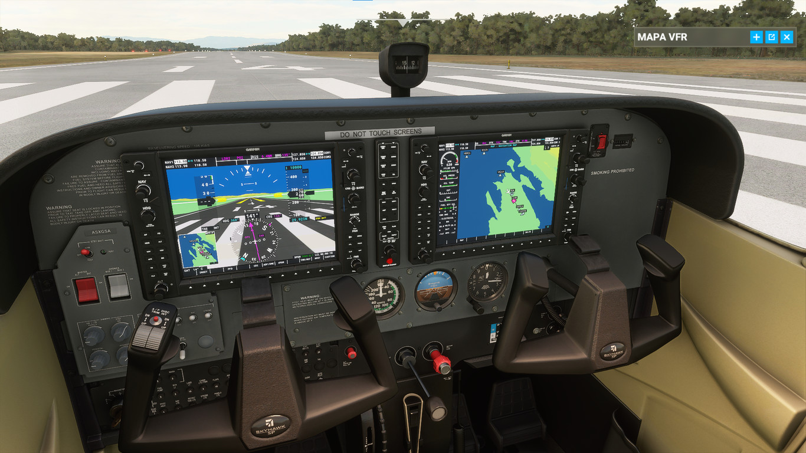Si algo ha caracterizado a todas las entregas de 'Flight Simulator' es su realismo en cuanto a físicas, detalle de las cabinas y los modelos de los aviones y experiencia de vuelo. 'Flight Simulator' es un videojuego en tanto que tiene un pequeño "modo arcade" que nos permite hacer "misiones", como aterrizar en aeropuertos en las condiciones más adversas, o simplemente poner el avión en modo automático y, después de hacerlo despegar, disfrutar del paisaje y desconectar. Hay juegos contemplativos y tienen su público.
Por otro lado, es un simulador hecho y derecho. ¿Qué significa eso? Que puede ser tan complicado como queramos. Seguramente un piloto tenga clarísimo (y espero que así sea) qué son los flaps, qué hace cada botón de una cabina, qué pasa si tocas tal palanca o cómo proceder ante turbulencias. Todo esto es lo que nos ofrece el videojuego/simulador que hoy nos ocupa. Podemos jugar en modo fácil, con guías visuales que nos explican qué hacer en todo momento, sistemas automatizados y un sistema de IA que gestiona las comunicaciones, o podemos apagarlo todo y buscarnos la vida para encender un jet de doble turbina.
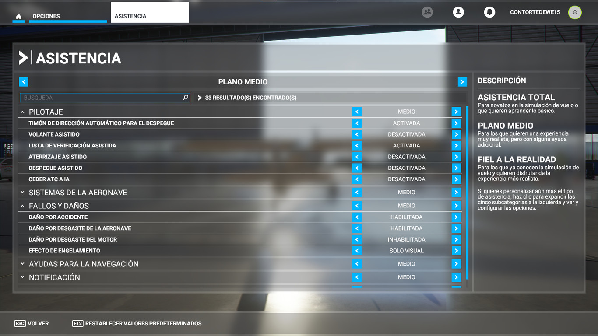El simulador, por lo tanto, no es precisamente accesible para todo el mundo. Requiere paciencia, cierta concentración y cierta voluntad de aprender. A ello ayudan mucho los tutoriales, que te enseñan mediante la práctica cómo pilotar una avioneta. Evidentemente, no hay tutoriales para cada avión del juego y cada aeronave es diferente, por lo que saber pilotar una avioneta recreativa no implica saber pilotar un Boeing 747. Además, Microsoft ha implementado un "checklist" que nos permite saber todo lo que tenemos que hacer antes de encender el avión, como activar tal o cual elemento o tirar de tal o cual palanca. Es bastante útil y recomiendo usarlo si quieres ir aumentando la "dificultad" del simulador.
Yo, para jugar y poder escribir este texto, opté por dejarlo en una dificultad media para, simplemente, disfrutar de la experiencia de vuelo, incluyendo encender, despegar, pilotar y aterrizar el avión. En ese aspecto, 'Flight Simulator 2020' es espectacular. Durante el tiempo que he estado jugando he usado el teclado y el ratón, pero también unos Thrustmaster TPR (499,99 euros), un Logitech G Flight Simulator Yoke (165 euros) y los Alpha Flight Controls (249 euros). La experiencia con ellos cambia radicalmente.
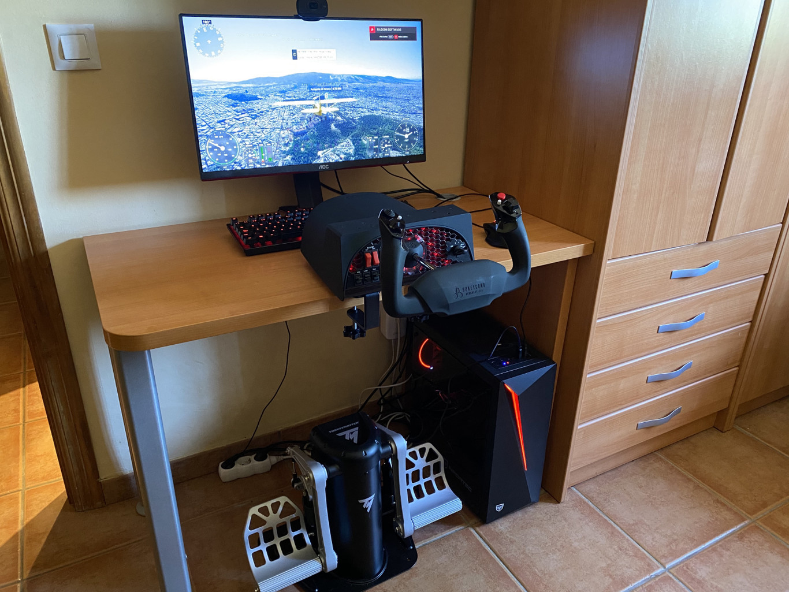Una vez pruebas los periféricos, especialmente diseñados para este tipo de juegos, no quieres volver al teclado y el ratón o el mando, porque no solo es todo más sencillo, sino que la experiencia es mucho más inmersiva. Puedes pulsar F2 para acelerar, pero también puedes empujar por ti mismo unas palancas conectadas por USB y sentir que el avión acelera o frena según lo mucho o poco que empujes. Los periféricos son muy divertidos y diría que hasta obligatorios para disfrutar del juego al máximo.
El problema de usar el teclado y el ratón es que son muchos botones. Pero no muchos botones como en 'World of Warcraft', sino muchos botones nivel extremo. Todas las acciones de los aviones están mapeadas en el teclado y van desde lo más sencillo, como soltar el freno con "." o acelerar con F2, hasta lo más complicado como activar tal o cual botón usando un comando de tres o cuatro teclas. Si no tenéis los periféricos ni un mando de Xbox a mano, mi recomendación personal es que intentéis jugar tocando los botones y las palancas usando la cámara de la cabina y el ratón. Es más complicado, pero también más "sencillo" que aprenderse todos los comandos.
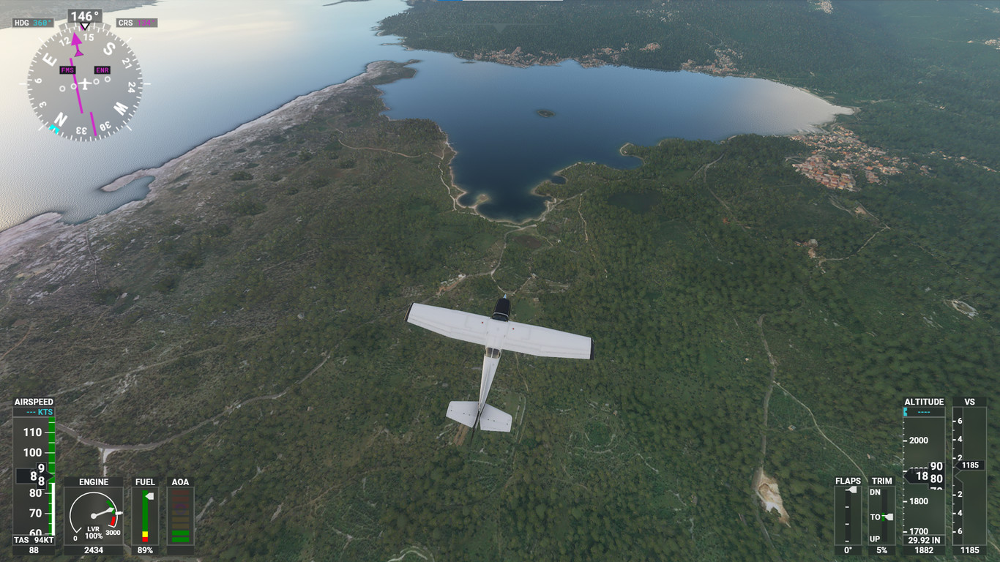¿Y qué tal es jugar? Como os podéis imaginar, es muy complicado explicar toda la física que rodea al juego, pero quedémonos con la idea de que todo lo que pasa a nuestro alrededor nos afecta. Si hay mucho aire, pilotar el avión será mucho más complicado que pilotar en un día despejado. Si pasamos por entre dos montañas y hay viento, habrá turbulencias. Si vamos a aterrizar y el aire nos viene por la derecha, el avión se irá hacia la izquierda y tendremos que corregir el rumbo. Si aterrizamos y no bajamos el tren de aterrizaje o, simplemente, nos equivocamos al maniobrar, nos estrellaremos y pasaremos a un fundido a negro (nada de explosiones y colisiones). Todo, desde la humedad, la temperatura o desde dónde nos impacte la luz, afectará a nuestra experiencia de pilotaje.
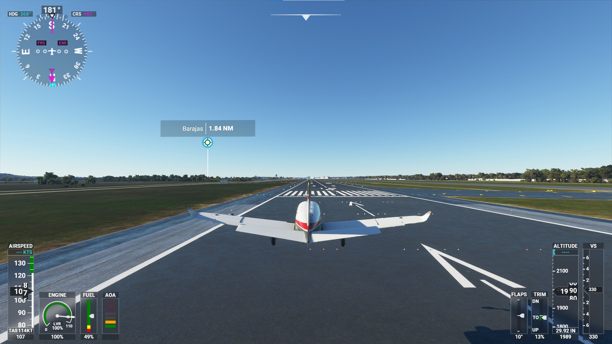Ahí entra en juego el configurador de vuelo. Además de poder configurar todos los apartados del avión, como la carga de combustible o ciertos parámetros, podemos cambiar las condiciones climatológicas a placer, ya sea antes de empezar a volar o durante el vuelo. ¿Es un día tranquilo y despejado? Adelante, siéntete libre de poner una tormenta tropical enorme y enfrentarte a un verdadero desafío. Pero sin lugar a dudas, lo más curioso es el clima en tiempo real.
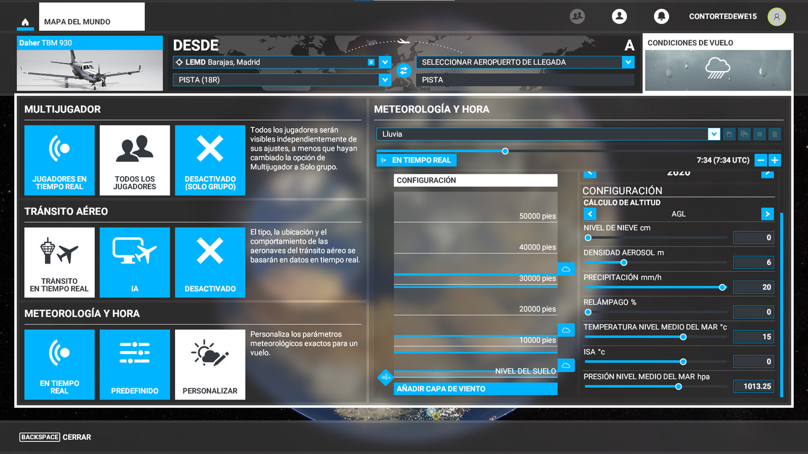'Flight Simulator 2020', si estamos conectados a Internet (ahora volvemos a esto), es capaz de ofrecernos las condiciones climáticas en tiempo real de la zona en la que estemos, por lo que si sales del aeropuerto Madrid-Barajas y está lloviendo, en el juego lloverá también. A lo largo del vuelo se irá haciendo de noche (o de día), si pasamos por una zona con un clima diferente se cambiará en el juego y, en pocas palabras, pilotaremos como pilotaría un piloto de verdad.
Ya en vuelo, es impresionante lo diferente que es pilotar cada aeronave. No es lo mismo pilotar una avioneta por encima de Córdoba o Málaga que hacer un trayecto Madrid-Nueva York en un Airbus. Cada avión se siente diferente y la experiencia de llevar una avioneta no tiene nada que ver con la de pilotar un avión comercial o un jet.
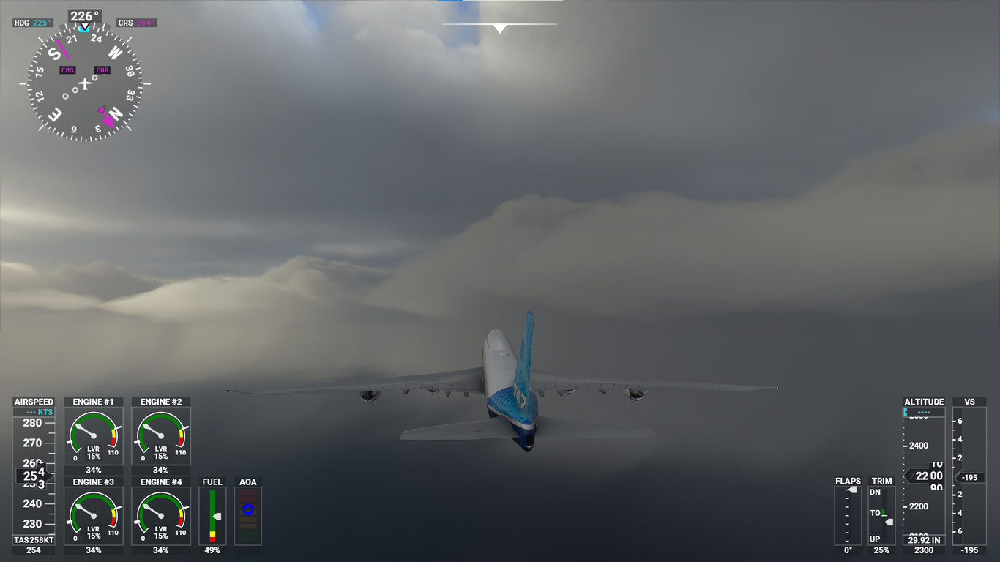Son aviones distintos, más o menos pesados, más o menos rápidos, más o menos versátiles, y hay que hacerse a cada uno de ellos. Esto es particularmente ilusionante, en tanto que permite a cualquier jugador jugar a su manera. Hay quien puede preferir llevar una avioneta y disfrutar de las vistas y hay quien puede querer hacer un trayecto largo a 10.000 pies de altura. El juego ofrece ambas opciones, aunque el número de aviones disponibles dependerá de la versión que compremos.
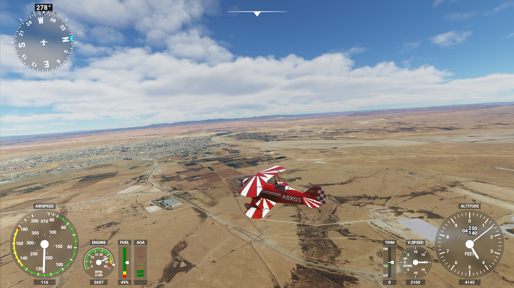Todo esto, por supuesto, supone una carga importante para nuestro equipo. 'Flight Simulator 2020' requiere de un ordenador potente para jugar y es bastante exigente. Durante nuestras "partidas" hemos sufrido algunas caídas de frames (no demasiado importantes) y unos tiempos de carga exageradamente altos. Es un juego que pesa 150 GB y cargar todo el mapa del mundo no es precisamente baladí, por lo que no os extrañéis si tenéis que esperar tres o cuatro minutos entre que empezáis la partida y el juego carga. Lo del "mapa del mundo" no es una forma de hablar, por cierto. Literalmente, podremos sobrevolar todo el globo si así lo deseamos.
Los gráficos en una palabra: sobresalientes
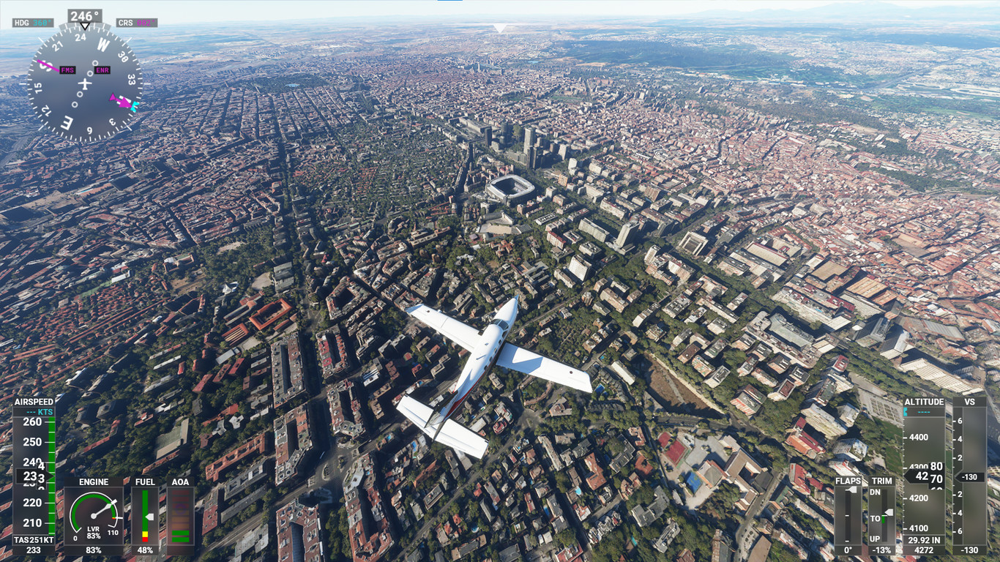Antes hablábamos de que el juego puede jugarse online u offline, y no es una cuestión menor. El juego va descargando los "modelos" del terreno conforme vamos avanzando y, para ello, necesita conexión a Internet. De hecho, es probable que si la conexión no es demasiado buena el juego nos invite a jugar offline. Y es que 'Flight Simulator 2020' tiene 341 ciudades recreadas mediante fotogrametría, a.k.a. fotos satélite de Bing Maps con un nivel de detalle espectacular. En España, estas ciudades son Alicante, Barcelona, Córdoba (de donde es un servidor, por cierto), Madrid, Marbella, Murcia, Pamplona, Sevilla, Valencia y Vigo. Otras ciudades conocidas son Nueva York, Bruselas, Roma, Berlín o Toronto, pero la lista es amplia.
Estas ciudades, cuando las sobrevolamos, están en tres dimensiones y el nivel de detalle es exquisito. Sobrevolar Córdoba, ver lo bien construida que está la Mezquita-Catedral e incluso la zona en la que vivo es, sencillamente, espectacular. Invito a todo jugador interesado a echar un vistazo a su ciudad y su barrio, seguramente se sorprenda. También es muy visual volar sobre Nueva York y ver la Estatua de la Libertad o Central Park, o visitar Roma y echar un vistazo al Coliseo Romano por dentro. Microsoft, en estas ciudades, ha hecho un trabajo excepcional. En el resto de ciudades o jugando offline, los modelos 3D se aprecian algo menos realistas, pero a mucha altura la experiencia es igualmente buena.
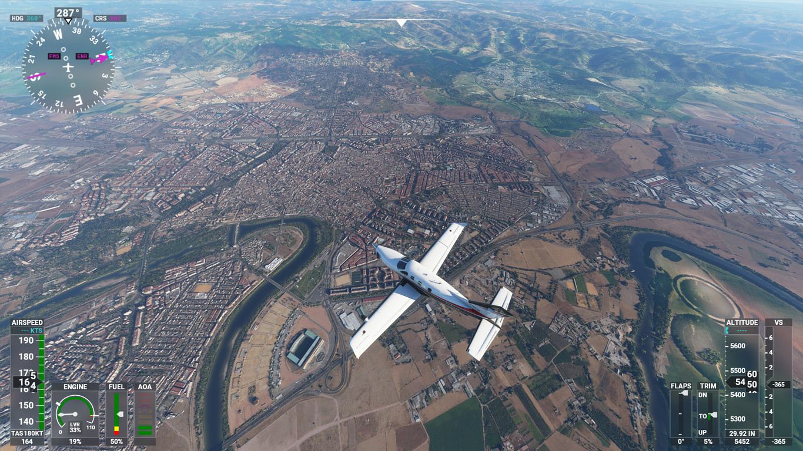Por otro lado, el juego está lleno de detalles de esos que pasan desapercibidos pero que se agradece que estén. La lluvia es un buen ejemplo. Si llueve, el cristal se mojará y las gotas se quedarán marcadas, pero conforme aceleremos se irán deslizando hacia atrás y dejando el rastro. Algo similar sucede con la nieve. Si el sol nos da de cara nos deslumbrará; si se dan las condiciones climáticas apropiadas, podremos ver el arcoíris cuando llueva. Si volamos por dentro de una nube, no veremos nada hasta que salgamos. Si el sol se refleja en un edificio con muchos cristales, estos reflejarán el sol. Si es de noche y una ciudad tiene mucha luz, veremos su brillo en las nubes lejanas.
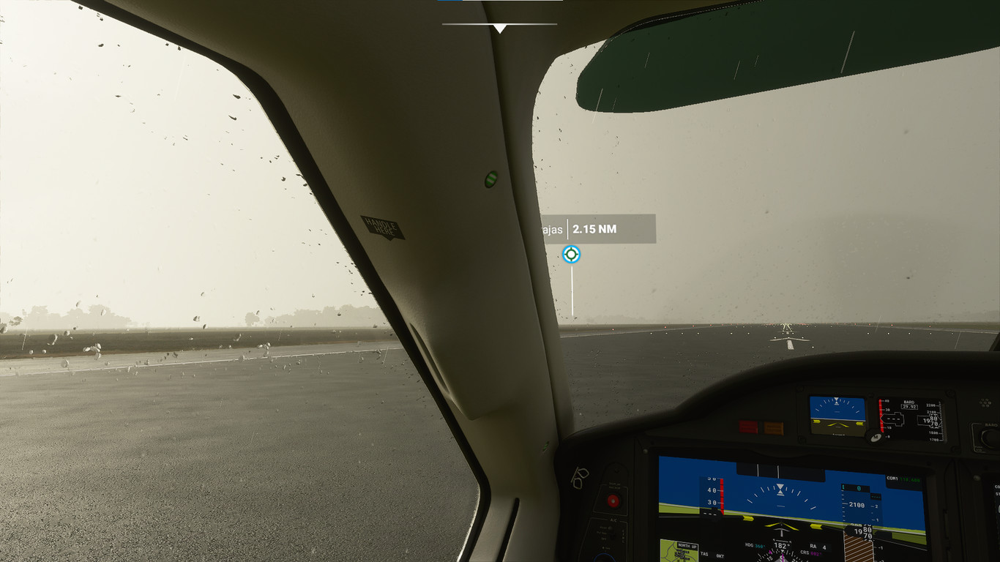Otro elemento interesante y que ya destacamos en las primeras impresiones es el agua. Como sabréis, el agua no es de color azul cristalino en todo el mundo, sino que depende de la polución, la cantidad de nubes que haya, la profundidad... Todo esto se contempla en el juego, así que si sobrevolemos el océano Pacífico tendremos un maravilloso azul profundo y si sobrevolamos Londres en un día nublado el agua será más gris. Al que le pueda interesar, también están muy bien representadas las carreteras e incluso hay tráfico. Es más, el tráfico depende del tipo de vía y lo genera la propia IA. Lo que no hay son personas en las calles.
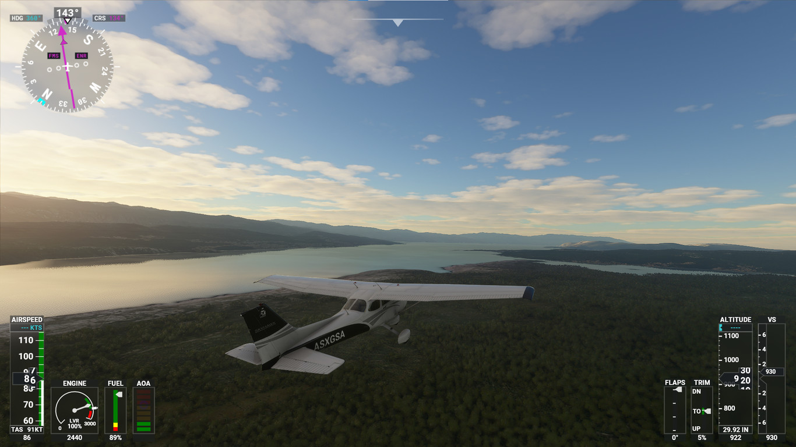Todo está pensado para que sintamos que estamos dentro del avión y, sin duda, seguramente sea lo que más llame la atención a los usuarios más amateurs o con menos experiencia en simuladores. Uno de los puntos principales de 'Flight Simulator 2020' son sus gráficos, capaces de sumergirte de lleno en la simulación. Ayuda, por supuesto, lo bien detalladas que están las cabinas y los aviones. Mi recomendación tras haber volado muchas horas es que explotéis la vista de cabina al máximo. Es como, al menos yo, he conseguido la mejor experiencia. Una vez estéis en vuelo a 10.000 pies, cambiad la cámara a la externa, activad el piloto automático y disfrutad del paisaje.
Microsoft Flight Simulator 2020, la opinión de Xataka
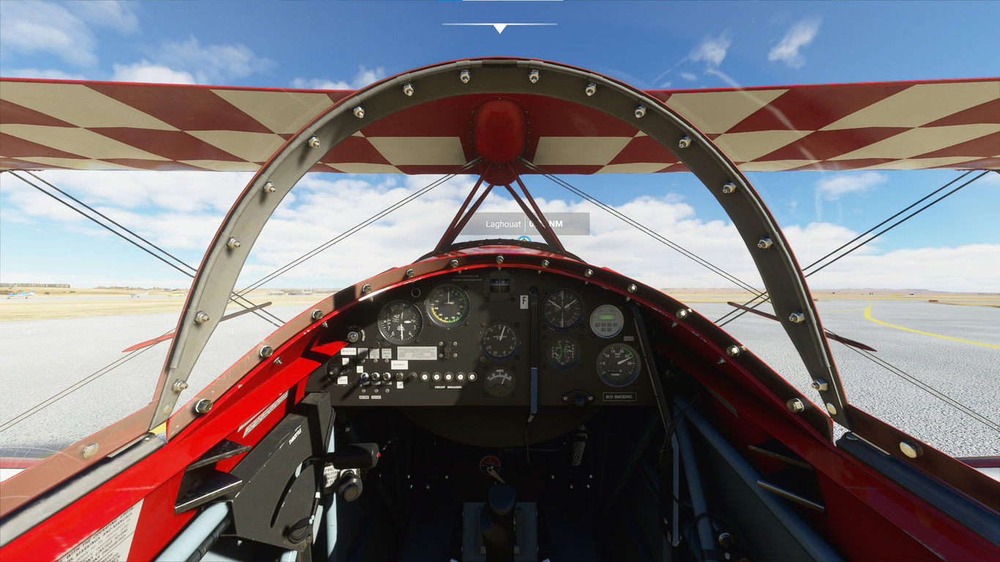'Flight Simulator 2020' es, en pocas palabras, un juego que no está hecho para todo el mundo, ni lo pretende. No es un 'Call of Duty', que es accesible para cualquier persona más o menos hábil, o un juego de aventuras y plataformas. Es un juego de nicho, pensado para los amantes de los simuladores, que requiere de tiempo, destreza, ganas de aprender y un ordenador bastante potente. Tras haberlo jugado largo y tendido, mi sensación, y hablo a nivel personal, es que no es juego que esté hecho para mí, pero que hará las delicias de 1) los aficionados a los simuladores de vuelo y 2) aquellos que quieran darle una oportunidad y aprender a pilotar un avión.
Tiene aspectos a mejorar, como los tiempos de carga y las caídas de frames cuando jugamos en lugares más exigentes, como en una tormenta, pero más allá de eso, es un juego muy conseguido. Coincido con mis compañeros de 3DJuegos en que es un juego al que venimos a aprender a pilotar y, en ese sentido, considero que no solo lo consigue, sino que de alguna forma invita a ello. Cada avión es diferente, cada condición climatológica nos enfrenta a un reto distinto y, además, el juego nos ofrece retos de aterrizajes o eventos que nos permiten salir un poco de la rutina y probar cosas nuevas. De una forma u otra, siempre estamos aprendiendo.
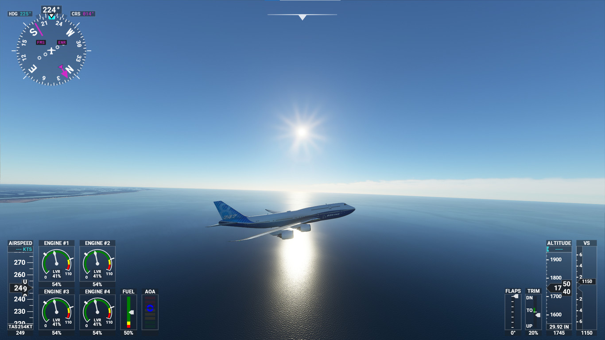Ahora bien, para mí, el principal punto negativo del juego es que la única forma de exprimirlo al máximo es con los periféricos adecuados. Eso supone hacer un (generoso) desembolso adicional aparte del juego y puede suponer una barrera de entrada para según qué jugadores. Pero por lo demás, Microsoft y Asobo Studio han hecho un trabajo excelente con su último juego/simulador y se nota que 14 años desde la última entrega han dado sus frutos. Con todo, cada jugador es un mundo y tiene sus propias preferencias. ¿Parte positiva de todo ello? 'Microsoft Flight Simulator 2020' está disponible en Game Pass, así que sois suscriptores no tendréis que hacer otra cosa que descargarlo y probarlo por vosotros mismos.